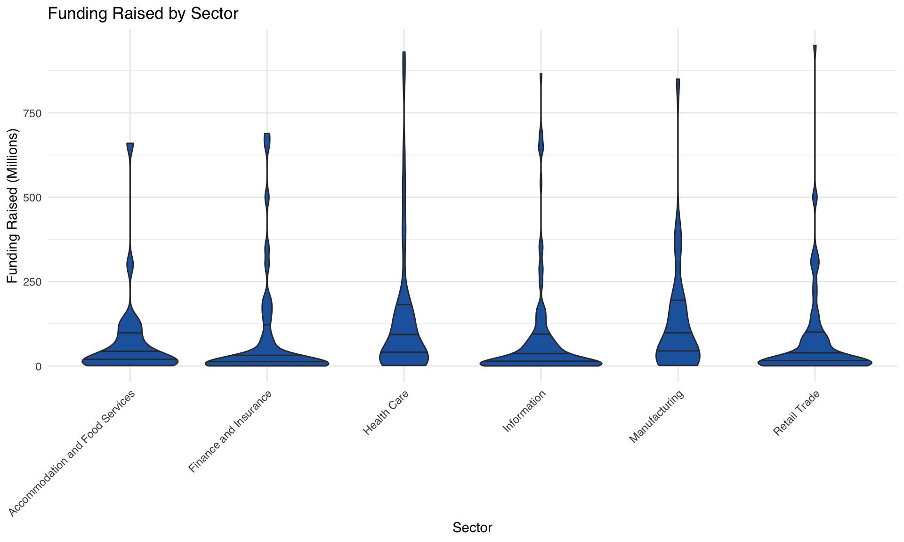
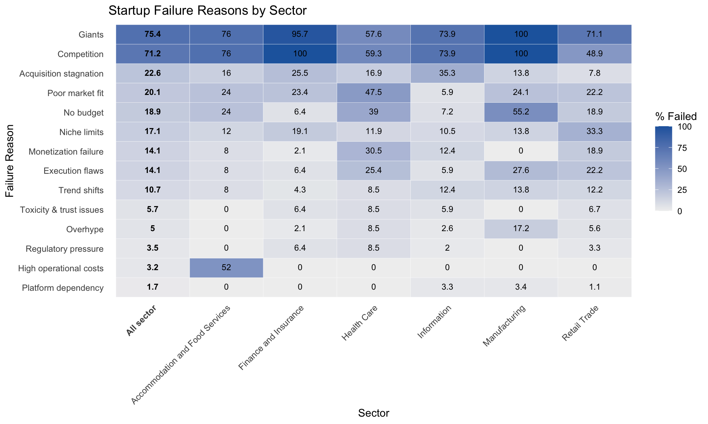
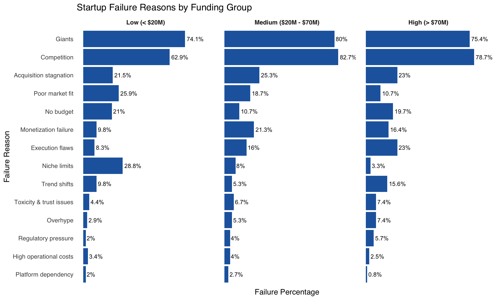
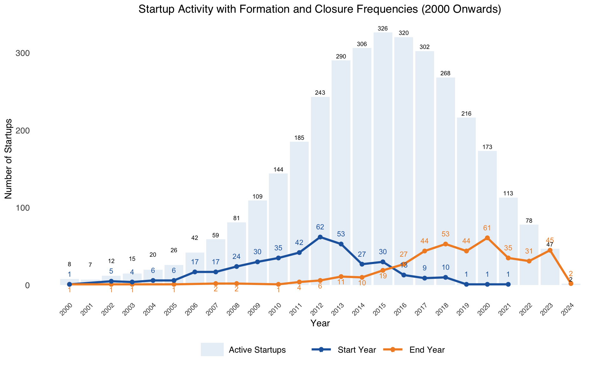

| sector | < $20M | $20M-$70M | $70M > |
|---|---|---|---|
| Accommodation and Food Services | 12 | 6 | 7 |
| Finance and Insurance | 28 | 8 | 11 |
| Health Care | 16 | 15 | 27 |
| Information | 80 | 34 | 39 |
| Manufacturing | 9 | 8 | 12 |
| Retail Trade | 49 | 15 | 26 |
Why do startups fail?
Analysis on failed startups post-mortem
1 Executive Summary
This analysis explores why startups fail by examining post-mortems—closure announcements from CEOs or investors—of U.S. failed startups. Common reasons include intense competition, lack of funding, and poor product-market fit, alongside sector- and funding-specific patterns. Temporal trends show a boom in startup activity between 2009–2021, with failures peaking from 2020–2023 due to COVID-19 and funding freezes. The findings offer valuable lessons for founders, investors, and incubators to build more flexible, adaptive business models amid economic uncertainty.
2 Introduction
Startups have long been engines of innovation, yet their failure rate remains notoriously high — more than two-thirds of them are unable to generate positive returns (Eisenmann, 2021). In recent years, macroeconomic challenges and a venture funding freeze since 2022 have made startup survival even more difficult (CB Insights, 2018, 2024). This environment raises an urgent question: Why and when do startups fail? To answer this, we analyzed post-mortems from 483 failed startups compiled by CB Insights, where founders shared the reasons behind their collapse (CB Insights, 2024). These candid reflections offer rare, unfiltered insights into the internal and external pressures startups face.
Our analysis focuses on two key dimensions: (1) self-reported reasons for failure, which reveal internal struggles shaped by sector-specific dynamics and funding maturity; and (2) temporal patterns of startup activity, which reflect how external forces affect startup viability over time. Understanding these patterns can help startup founders, investors, and policymakers better anticipate pitfalls and design more resilient strategies. Ultimately, this research aims to uncover not only on what goes wrong — but also when and for whom — to inform smarter decision-making in the startup ecosystem.
3 Methodology
The dataset was sourced from CB Insights’ public dataset (CB Insights, 2024) shared via Kaggle. The dataset offers insights into the name, years of operation and funding amounts of 409 failed startups across sectors like Finance, Health, Retail and IT. Each sector was a separate CSV file and merged into a single dataset for analysis.
Data cleaning and transformation were performed using R and the tidyverse. Column names were standardized and duplicate observations were removed. To conduct temporal analysis, the years_of_operation variable was parsed to extract start_year and end_year from which the business duration was calculated.
To investigate the relationship between funding levels and failure reasons, funding data was cleaned by extracting numeric values and converted into millions for consistency across records. The dataset variable description can be found Table 2 (see Section 7)
Table 1 provides an overview of the funds raised by startups in different sectors. It is important to have an overview before we deep dive into the illustrative representation below which talks further on skew distribution.

Figure 1 illustrates the heavy right-skewed distribution of funding across all sectors. Since there is no clear groupings in funding and considering the various funding rounds startups may undergo, we defined three funding brackets to align with the typical stages of startup development.
- Low-funded startups are those that have raised less than $20M, commonly associated with (pre-)seed and early-stage funding rounds (Rutan, n.d.).
- Medium-funded startups have raised between $20M - $70M, typically corresponding to Series A and B stages. These startups have already validated their market fit and are now raising capital for market expansion and revenue generation (Rutan, n.d.).
- High-funded startups have secured over $70M, amount often reached by Series C companies. At this stage, startups have usually been in operation for several years, proven their business model and are seeking international expansion, an IPO or acquisition by private equity firms/investment banks (Rutan, n.d.).
4 Results
4.1 Reasons for startup failures
4.1.1 Failure reasons by sector

70% of startups cited competition and market giants as their failure reasons. Poor market fit, post-acquisition stagnation, and budget constraints are also common challenges across sectors.
Figure 2 demonstrates sector-specific challenges:
- Accommodation and Food Services: 52% of startups failed due to high operational costs.
- Healthcare: the main reasons were poor market fit, monetization failure, and execution flaws.
- Manufacturing: 55% cited lack of budget, 28% reported execution flaws.
4.1.2 Failure reasons by Funding groups

Figure 3 demonstrates distinct challenges across different funding levels.
- Low-funded startups struggled with scalability limits to niche product (29%), product-market fit (26%) and budget limits (21%).
- While product-market fit was also a hurdle for medium-funded startups (19%), their bigger obstacles are acquisition stagnation (25%) and monetization (21%).
- Execution flaws (23%), acquisition stagnation (23%), budget limits (20%), monetization failures (16%) and trend shifts (16%) are primary failure factors for high-funded startups.
4.2 Temporal aspects of start-up failures

The observed U.S. failed startups experienced significant fluctuations in activity, driven by economic cycles and external shocks (Figure 4).
- The number of active startups peaked at 326 in 2015, fueled by post-2008 recovery.
- Closures plummeted to 61 in 2020, reflecting COVID-19’s impact on funding and operations.
- Post-2015 decline in new startups suggests market saturation, while rising closures emphasize external pressures.
5 Discussion, Conclusions, and Recommendations
Building a startup has become a modern-day ambition, with many ventures chasing and reaching unicorn status. But behind the glamor, starting a business is an inherently risky journey that not everyone wins. More than 70% of startups fail, and fewer than half survive beyond their fifth year (Eisenmann, 2021). However, success is rarely just about getting things right, but often about learning from what went wrong.
To understand why so many startups failed, we analyzed failed startup post-mortems. In the results section, we presented two main analyses: self-reported reasons for failure and temporal patterns in startup operations and closures. While failure reasons tell a story of internal challenges that startups faced, temporal trend points to the impact of external, macroeconomic forces. This discussion connects the data back to real-world business practices—highlighting (1) how sector characteristics and funding levels relate to internal causes of failure, and (2) how broader economic cycles shape the external environment in which startups operate and constitute to external causes of failure.
5.1 Discussion
5.1.1 Internal reasons for startup failure
Figure 2 and Figure 3 show an overview of failure reasons across sectors and funding groups. While some challenges are universally shared—such as being outcompeted by dominant players, running out of funds, poor product-market fit, or experiencing stagnation post-acquisition—other reasons are deeply shaped by the business context each startup operated in. These patterns reflect internal dynamics unique to different industries and funding stages.
Sector-specific challenges
Each sector has a different mix of reasons on why their startups failed. Accommodation and Food services startups reported 52% of their failures were due to High operational costs, which is unsurprising given the industry nature of heavy overheads into physical sites, e.g., hotels, restaurant. High financial requirement is also seen in 24% of startups attributing No budget to their failures.
Similarly, Health Care and Manufacturing require substantial upfront investments into product development, which was a major hurdle that left 40% of startups in Health Care and 55% of startups in Manufacturing out of business due to insufficient financial capability.
Beyond financial shortages, Health Care startups struggled with product-market fit, monetization failure and business execution. This tells a story of difficulties getting close to and empathize with customers, probably due to the industry nature of data confidentiality, discouraging people to share their health status.
Unlike sectors with a few dominant failure factors, startups in Retail Trade reported a broad range of reasons, with Niche limits (33%), Poor market fit (22%), and Execution flaws (22%) as the most common. With lower figures for Competition (49%), Retail Trade is characterised by numerous niches, yet, whether these niches can scale sustainably remains a key uncertainty. Such scalability problem also underpins the financial and monetization challenges faced by 19% of startups in the sector.
Both Finance and Insurance, and Information startups blamed market competition and major players for their failure, while budget limits or monetization challenges were not as considerable as other sectors. This means prolific revenue potential and low barriers to entry, especially financial capital - factors that itensify market rivalry.
Funding levels and challenges in each startup lifecycle stages
A closer look through the lens of funding reveals fundamental differences in failure reasons. Low-funded startups (<$20M) often overlap with early-stage companies that typically have only a proof-of-concept or minimum viable product. These startups are still exploring market fit, which explains their struggles with Poor market fit (26%) and Niche limits (29%).
Medium-funded startups ($20M–$70M), likely in Series A or B stages, are focused on market expansion and revenue generation. Their key challenges shift to Acquisition stagnation (25%), Monetization failure (21%), and Execution flaws (16%).
High-funded startups (>$70M), often long-time Series C companies, have usually validated their business model. Therefore, they reported fewer issues with product-market fit (11%) compared to low-funded ones and monetization (17%) compared to medium-funded ones. However, as operations scale and markets evolve, they failed due to execution flaws and operation stagnation post-acquisition (23%), limited budget (20%) and inability to transform themselves with market trend (16%).
5.1.2 External reasons for startup failure
Figure 4 provide a timeline of startup operations throughout almost three decades, revealing how startup founding and failures fluctuated in alignment with macroeconomic events. Most were active from 2009 to 2021, with the busiest year being 2015, when 326 startups were running, boosted by the economic rebound after the 2008 crash and heavy investment in tech and finance startups. These sectors struggled with fierce competition due to easy market entry. Failures jumped sharply in 2020–2023, with 64 shutting down in 2020 alone due to the COVID-19 pandemic’s economic hit, which hurt funding, supply chains, and customer demand. This shows outside events made internal problems like poor product fit or bad management worse.
These impacts played out differently across sectors. Startups in Accommodation and Food were hit hard by lockdowns and travel restrictions, and 24% ran out of money. Health Care startups, where 40% faced funding shortages, likely saw more closures in 2020 as privacy rules made it hard to connect with customers. Retail Trade startups, with issues of niche markets (33%), suffered when spending dropped in 2020. Well-funded startups (over $70M), often more established, lasted longer pre-2018 but struggled post-2020 due to management errors (23%) or failing to keep up with market changes (16%). Small startups (under $20M) with poor market fit (26%) were hit hardest in 2020–2021, lacking cash to adapt. Finance startups like LendingClub and Circle lasted longer (16 and 11 years) but closed in 2023, losing to giants like PayPal.
Tech startups like Digg and MySpace peaked early (2004–2010) but faded by 2018–2020 as Facebook and Reddit took over. Manufacturing startups like Faraday Future, needing lots of money, saw failures rise post-2020 due to bad management and competition from Tesla. The 2020–2023 failure spike shows how the pandemic worsened money and competition problems from earlier sections.
Startups in costly sectors struggled most during economic slumps, while tech and finance faced constant rivalry. This pattern shows startups need flexible plans to survive tough economic times, especially in sectors with high costs or heavy competition.
5.2 Conclusions & Recommendations
The analysis of U.S. failed startups reveals a turbulent entrepreneurial landscape influenced by economic cycles, intense competition, and external disruptions. Startups survived an average of 8.2 years, facing challenges across sectors: 52% of Accommodation and Food Services startups failed due to high operational costs, while 55% of Manufacturing startups cited budget constraints. Finance and Information startups battled market giants. From 2000 onward, startup formations peaked in 2012 with 62 new ventures, reflecting a surge during the post-2008 recovery and resulting in active startups reached their highest at 326 in 2015. Closures surged to 64 in 2020, highlighting the pandemic’s economic impact, which disrupted funding and operations across sectors. A decline in formations after 2015 indicates growing market saturation, while rising closures underscore external pressures.
To succeed, founders must develop adaptable strategies to address market shifts, such as the post-2015 saturation. Flexibility is key, whether adjusting to consumer trends in Retail Trade (33% failed due to niche limits) or tackling execution flaws in high-funded startups (23% failure rate). Investors and incubators should extend beyond funding, offering mentorship, market access, and operational guidance, particularly for low-funded startups facing poor market fit (26%). Stakeholders should prepare for policy changes from the 2025 U.S. administration, such as tariff increases on imported tech components or stricter data privacy laws. Businesses should align their strategies to leverage these policies, benefiting through innovations like local sourcing or privacy-focused solutions.
6 References
CB Insights. (2018). The Venture Capital Funnel. https://www.cbinsights.com/research/venture-capital-funnel-2/
CB Insights. (2024). 483 startup failure post-mortems. https://www.cbinsights.com/research/startup-failure-post-mortem/
Eisenmann, T. (2021). Why Start-ups Fail. Harvard Business Review. https://hbr.org/2021/05/why-start-ups-fail
Rutan, R. (n.d.). Series A, B, C, D, and E Funding: How It Works. Retrieved May 27, 2025, from https://www.startups.com/articles/series-funding-a-b-c-d-e
7 Appendix
7.1 Appendix 1: Data dictionary
Table 2 describes all variables from the cleaned dataset used in this analysis.
| Variable | Description |
|---|---|
| name | Name of the startup |
| sector | Business sector or industry |
| what_they_did | Description of what the startup did |
| how_much_they_raised | Total funds raised before failure |
| why_they_failed | Primary reason for startup failure |
| takeaway | Key takeaway or lesson from the failure |
| giants | Whether the startup competed with major players |
| no_budget | Failed due to budget constraints |
| competition | Faced tough competition |
| poor_market_fit | Did not fit well with market demand |
| acquisition_stagnation | Growth plateaued or stagnated |
| platform_dependency | Depended heavily on external platforms |
| monetization_failure | Could not effectively monetize |
| niche_limits | Had limited market potential |
| execution_flaws | Poor execution or management issues |
| trend_shifts | Impact of changing industry trends |
| toxicity_trust_issues | Trust or toxicity issues in the team |
| regulatory_pressure | Faced legal or regulatory hurdles |
| overhype | Failure due to excessive hype or unrealistic expectations |
| high_operation_costs | High operational cost |
| funding_millions | Amount raised in millions |
| start_year | Business start year |
| end_year | business end year |
| business_operation_year | Business operational year |
| id | Refrence for company ID |
| funding_group | Determining which funding category a company falls into |